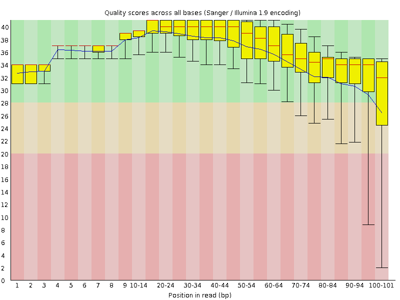
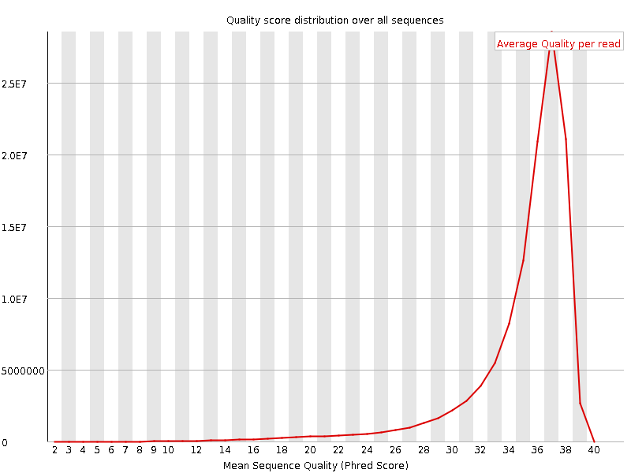
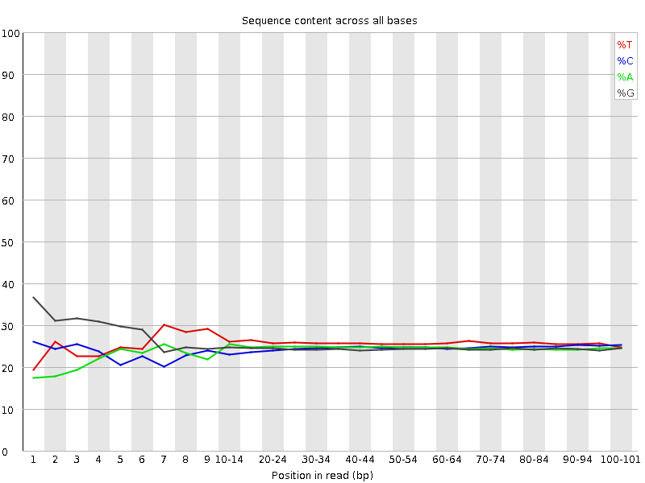
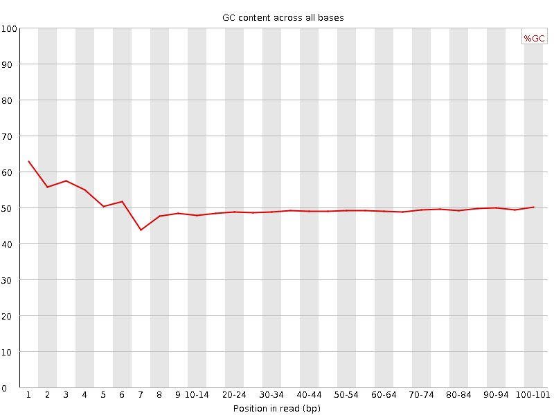
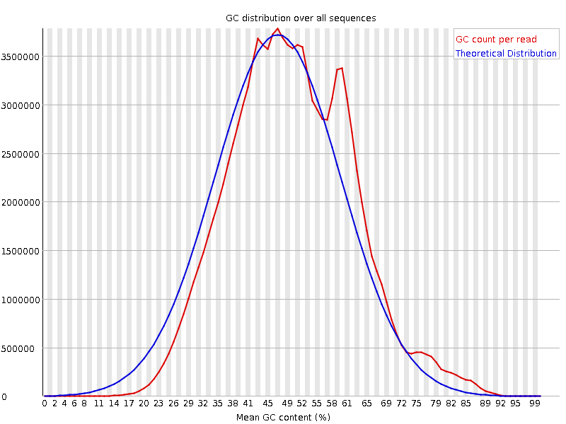
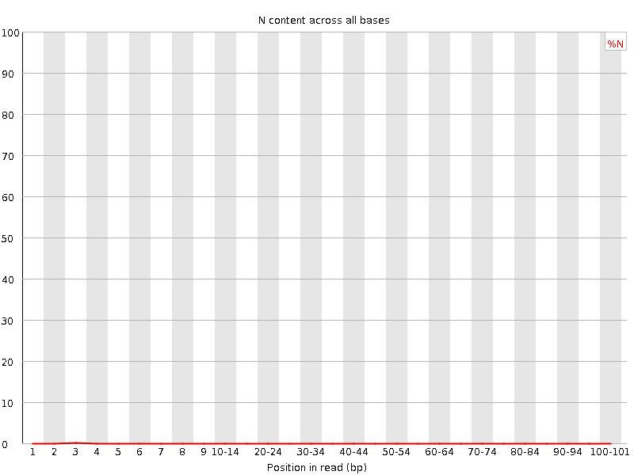
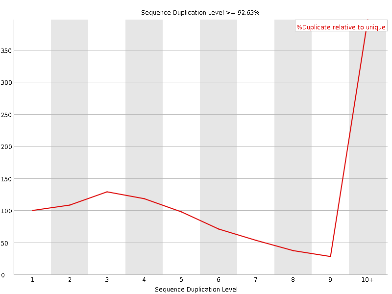
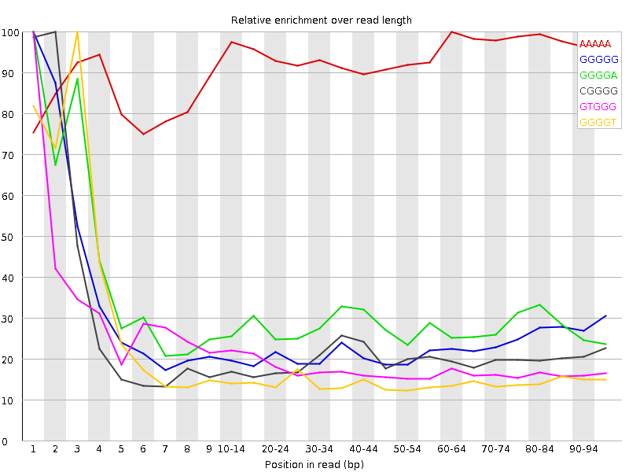

![[OK]](Icons/tick.png) Basic Statistics
Basic Statistics
| Measure | Value |
|---|---|
| Filename | SRR534327_1.fastq |
| File type | Conventional base calls |
| Encoding | Sanger / Illumina 1.9 |
| Total Sequences | 118574894 |
| Filtered Sequences | 0 |
| Sequence length | 101 |
| %GC | 49 |
Per base sequence quality

Per sequence quality scores

![[WARN]](Icons/warning.png) Per base sequence content
Per base sequence content

![[FAIL]](Icons/error.png) Per base GC content
Per base GC content

Per sequence GC content

Per base N content

Sequence Length Distribution

Sequence Duplication Levels

Overrepresented sequences
| Sequence | Count | Percentage | Possible Source |
|---|---|---|---|
| GTTGCCCAGGCTGGAGTGCAGTGGCTATTCACAGGCGCGATCCCACTACT | 152014 | 0.12820083145088032 | No Hit |
| GCTCAGGCTGGAGTGCAGTGGCTATTCACAGGCGCGATCCCACTACTGAT | 143082 | 0.12066803955987514 | No Hit |
| GTGAGTTTTAGCTTTATTGGGGAGGGGGTGATCTAAAACACTCTTTACGC | 138885 | 0.11712850445390235 | No Hit |
| GTTGCTCAGGCTGGAGTGCAGTGGCTATTCACAGGCGCGATCCCACTACT | 132388 | 0.1116492670025073 | No Hit |
| GCCCAGGCTGGAGTGCAGTGGCTATTCACAGGCGCGATCCCACTACTGAT | 131038 | 0.11051074606062898 | No Hit |
Kmer Content

| Sequence | Count | Obs/Exp Overall | Obs/Exp Max | Max Obs/Exp Position |
|---|---|---|---|---|
| AAAAA | 41244495 | 3.9926302 | 4.243806 | 60-64 |
| GGGGG | 25592710 | 2.3175397 | 9.554689 | 1 |
| GGGGA | 18423980 | 1.6907943 | 5.721513 | 1 |
| CGGGG | 16997025 | 1.557391 | 7.258453 | 2 |
| GTGGG | 16314040 | 1.4229913 | 7.588423 | 1 |
| GGGGT | 16201880 | 1.413208 | 8.470276 | 3 |
| GGTCT | 14397065 | 1.2239348 | 5.174663 | 5 |
| GGGTC | 13708195 | 1.2098593 | 5.7647877 | 4 |
| GCGGG | 11414005 | 1.0458342 | 5.572507 | 1 |